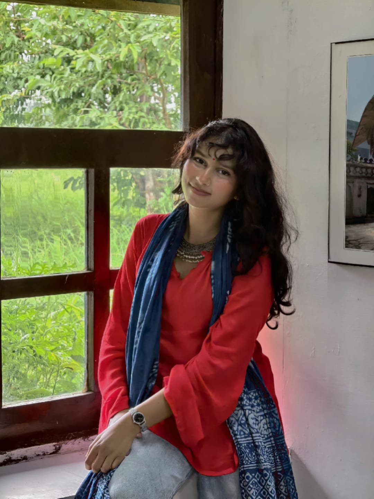

Jewellery brand founder
Design and make handmade jewellery and accessories, exploring wire, beads and resin-coated details. Develop product concepts, styling, brand communication and content around meaningful, story-inspired pieces.
THE CREATIVE WORLD OF
Lifestyle and Accessory Designer
A little curiosity, a love for craft, and a world of ideas waiting to take shape.
Step inside my story +Bhopal, India · NIFT × IIM Bangalore

CHAPTER I · ABOUT ME
I am a B.Des student at NIFT Bhopal, also pursuing BBA in Digital Business and Entrepreneurship at IIM Bangalore. My interests connect product design, ergonomics, sustainability and human behaviour.
As the founder of a handmade jewellery brand, I explore how materials, craft and personal stories can shape everyday accessories. I also work across graphic design and video content, bringing ideas to life through objects and visual communication.
CHAPTER II · EXPERIENCE
Design and make handmade jewellery and accessories, exploring wire, beads and resin-coated details. Develop product concepts, styling, brand communication and content around meaningful, story-inspired pieces.
Designed posters for college election campaigns at Delhi University, using typography, colour and layout to communicate campaign messages clearly.
Wrote creative scripts, recorded short-form videos and edited content for digital channels. Contributed to post design and developed communication and visual storytelling skills.
Completed hands-on training in plastic materials and processing, connecting material knowledge with product and accessories design.
CHAPTER III · EDUCATION
National Institute of Fashion Technology, Bhopal
Indian Institute of Management Bangalore
St. Joseph Convent Sr. Sec. School, Bhopal
CHAPTER IV · SKILLS & INTERESTS
Jewellery making, fashion and styling, art and craft, digital media, travelling and exploring new business ideas.
English · Hindi
A LITTLE HELLO · LET’S CONNECT
Bhopal, India